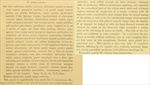

Click on images to enlarge
{kind=link}

Paropsis comma, description
Name
Trachymela comma (Blackburn, 1896)
Type specimen
Not examined.
Original description
[Original description shown in figure, translated from Latin using ChatGPT, 03/2026]
Rather broadly obovate, moderately convex, of somewhat greater height (seen from the side), the highest point placed opposite the middle margin (or a little before it); rather shining; ferruginous; the posterior part of the head and of the prothorax with two spots (these resembling the shape of a comma), and the elytra with black verrucae, the sides paler; body beneath black (variegated with reddish); antennae black, except at the base.
Head rather finely, somewhat rugulose-punctulate; prothorax wider than long in the ratio of 2⅖ : 1, from the apex for a considerable distance beyond the middle dilated, then towards the apex transversely but not very distinctly impressed, rather strongly though scarcely densely (coarsely rugulose at the sides) punctulate; sides strongly rounded, broadly but slightly flattened; posterior angles absent; scutellum slightly elevated.
Elytra slightly depressed below the humeral callus, then before the base transversely slightly impressed, strongly and rather closely, somewhat in rows (a little more so at the sides, a little less so behind, coarsely) punctate; the verrucae (continuous from base to apex) elongate, furnished with others rounded; the interstices less rugulose; the marginal portion broadly separated from the disc (by a groove scarcely interrupted before the middle); the humeral callus internally distant from the suture scarcely more than from the lateral margin of the elytra. Basal ventral segment (this reddish) sparsely and quite finely punctulate; third antennal segment distinctly longer than the fourth.
Length 4⅕ - 4½ lines (~8.9-9.5 mm); width 3⅕ - 3½ lines (~6.8-7.4 mm).Female slightly more convex than the male.
Notes
Blackburn (1896) deals with P. comma as part of his subgroup ii (i.e., those species without "strongly marked characters", whose greatest height is not or scarcely in front of the middle of the elytral margin and whose elytra are depressed under the humeral callus). Within that group, he characterises it as:
(1) inner edge of humeral callus distinctly nearer to lateral margin of elytra than to suture;
(2) sides of prothorax more or less explanate;
(3) elytra not having well-defined continuous costae;
(4) puncturation of the elytra not particularly fine;
(5) upper surface of elytra in general, or at least the verrucae, black or nearly so;
(6) explanate margins of prothorax wide (each about 1/3 of width of discal part);
(7) postbasal impression of elytral disc feeble;
(8) prothorax at its widest notably behind the middle;
(9) elytral puncturation well-defined, and seriate to apex;
(10) legs testaceous;
(11) Form much less wide [than regularis], elytra less rounded at sides.
This is the Tasmanian species Ta77. Blackburn considers it very similar to T. serpiginosa (another Tasmanian species) and T. regularis.
References
Blackburn, T. 1896, "Revision of the genus Paropsis. Part I", Proceedings of the Linnean Society of New South Wales, vol. 21, no. 4, 637-693 (page 657).
Copyright © 2026. All rights reserved.